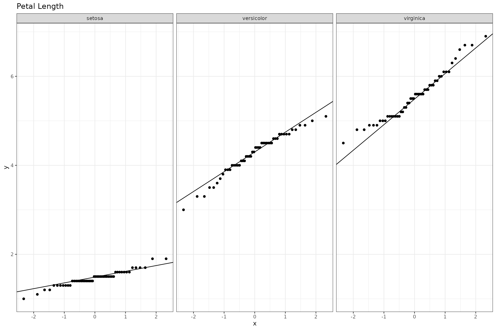
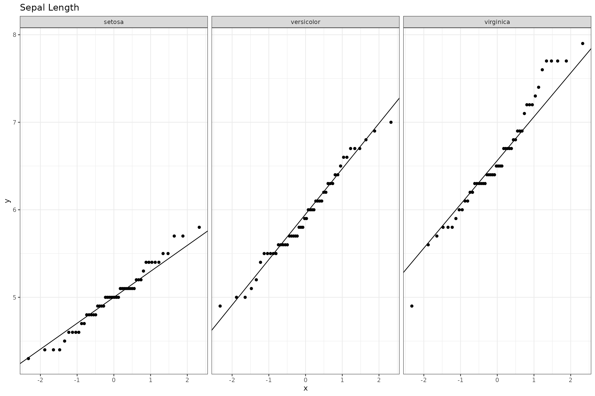
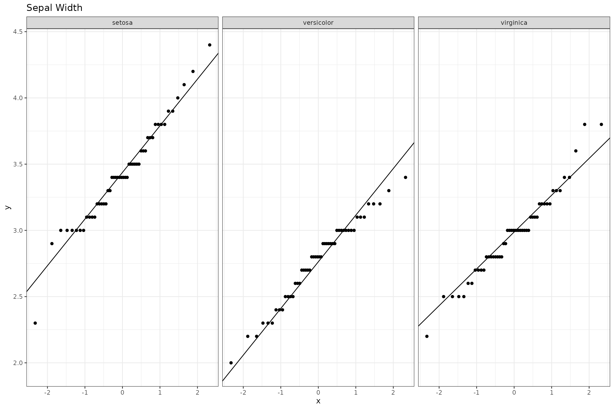

# library(bsu.tools)Introduction
The CTSC Template provides a skeleton for project documentation and report generation. The template should make it easier to follow reproducible research guidelines and standardize the output for CTSC projects conducted using RStudio.
How to use the Template
- Open a new R Markdown file > From Template > CTSC
Biostatistics Template.
- Using the template will require you to create a new folder.
e.g. CTSC_0000_Investigator.
- Using the template will require you to create a new folder.
e.g. CTSC_0000_Investigator.
- Import and process data.
- Cache data if file is large.
- Cache data if file is large.
- Run statistical analyses.
- Cache analyses if computationally intensive/time consuming.
- Cache analyses if computationally intensive/time consuming.
- Document data processing steps and analyses.
- Provide and interpret results for investigator.
Using the internal object in the setup
chunk we can controll the display/suppression of select sections.
internal=TRUE will show additional text/results for
internal documentation, while internal=FALSE will only
include sections to send to the investigator.
Example
An example CTSC project using the iris data set.
knitr::opts_chunk$set(fig.width=12, fig.height=8,
echo=TRUE, warning=FALSE, message=FALSE)
# list default packages to load, add additional packages as necessary
pacman::p_load(dplyr, tidyr, ggplot2, kableExtra, knitr)
# update 'asis' chunk to allow inline code
knit_engines$set(asis = function(options) {
if (options$echo && options$eval) knit_child(text = options$code)
})
internal <- TRUE
# source any external analysis scripts
# if analysis is computationally intensive there are a few options.
# 1) run analysis and save all results to load here
# 2) run analysis here and set chunk option cache=TRUE. A cached chunk will
# automatically load output and objects from a previous run.
# see https://bookdown.org/yihui/rmarkdown-cookbook/cache.html for more
# information
# check distribution of measurements by group
ggplot(iris, aes(sample = Petal.Length)) +
geom_qq() +
geom_qq_line() +
labs(title = 'Petal Length') +
facet_wrap(.~Species) +
theme_bw()
ggplot(iris, aes(sample = Petal.Width)) +
geom_qq() +
geom_qq_line() +
labs(title = 'Petal Width') +
facet_wrap(.~Species) +
theme_bw()
ggplot(iris, aes(sample = Sepal.Length)) +
geom_qq() +
geom_qq_line() +
labs(title = 'Sepal Length') +
facet_wrap(.~Species) +
theme_bw()
ggplot(iris, aes(sample = Sepal.Width)) +
geom_qq() +
geom_qq_line() +
labs(title = 'Sepal Width') +
facet_wrap(.~Species) +
theme_bw()
# displays R version, platform, base packages, attached packages, and packages
# loaded via a namespace
sessionInfo()
#> R version 4.5.2 (2025-10-31)
#> Platform: x86_64-pc-linux-gnu
#> Running under: Ubuntu 24.04.3 LTS
#>
#> Matrix products: default
#> BLAS: /usr/lib/x86_64-linux-gnu/openblas-pthread/libblas.so.3
#> LAPACK: /usr/lib/x86_64-linux-gnu/openblas-pthread/libopenblasp-r0.3.26.so; LAPACK version 3.12.0
#>
#> locale:
#> [1] LC_CTYPE=C.UTF-8 LC_NUMERIC=C LC_TIME=C.UTF-8
#> [4] LC_COLLATE=C.UTF-8 LC_MONETARY=C.UTF-8 LC_MESSAGES=C.UTF-8
#> [7] LC_PAPER=C.UTF-8 LC_NAME=C LC_ADDRESS=C
#> [10] LC_TELEPHONE=C LC_MEASUREMENT=C.UTF-8 LC_IDENTIFICATION=C
#>
#> time zone: UTC
#> tzcode source: system (glibc)
#>
#> attached base packages:
#> [1] stats graphics grDevices utils datasets methods base
#>
#> other attached packages:
#> [1] knitr_1.51 kableExtra_1.4.0 ggplot2_4.0.1 tidyr_1.3.2
#> [5] dplyr_1.1.4
#>
#> loaded via a namespace (and not attached):
#> [1] gtable_0.3.6 jsonlite_2.0.0 compiler_4.5.2 tidyselect_1.2.1
#> [5] xml2_1.5.1 stringr_1.6.0 jquerylib_0.1.4 systemfonts_1.3.1
#> [9] scales_1.4.0 textshaping_1.0.4 yaml_2.3.12 fastmap_1.2.0
#> [13] R6_2.6.1 labeling_0.4.3 generics_0.1.4 tibble_3.3.0
#> [17] bookdown_0.46 desc_1.4.3 svglite_2.2.2 bslib_0.9.0
#> [21] pillar_1.11.1 RColorBrewer_1.1-3 rlang_1.1.6 stringi_1.8.7
#> [25] cachem_1.1.0 xfun_0.55 fs_1.6.6 sass_0.4.10
#> [29] S7_0.2.1 viridisLite_0.4.2 cli_3.6.5 withr_3.0.2
#> [33] pkgdown_2.2.0 magrittr_2.0.4 digest_0.6.39 grid_4.5.2
#> [37] rstudioapi_0.17.1 lifecycle_1.0.4 vctrs_0.6.5 evaluate_1.0.5
#> [41] glue_1.8.0 farver_2.1.2 ragg_1.5.0 pacman_0.5.1
#> [45] rmarkdown_2.30 purrr_1.2.0 tools_4.5.2 pkgconfig_2.0.3
#> [49] htmltools_0.5.9Data appears to be normally distributed within each species.
STUDY DESCRIPTION/OBJECTIVE
This study is a brief analysis of the iris data set.
Aim 1: Provide an example of the ctsc_template_short.
Aim 2: Investigate the species differences in petal dimensions.
Aim 3: Investigate the species differences in sepal dimensions.
STATISTICAL ANALYSIS
- Calculate summary statistics for sepal length, sepal width, petal
length, and petal width by species.
- Test for group differences.
RESULTS
The group means are provided in Table @ref(tab:table-demo-kable) and Table @ref(tab:table-demo-arsenal). As shown in Table @ref(tab:table-demo-arsenal), all sepal and petal measurements are different between the groups, p < 0.001. A quick look at Figure @ref(fig:figure-demo) shows that setosa petal length, petal width, and sepal width are likely significantly different from virginica. Sepal length is likely significantly different between setosa and veriscolor.
For more information on Rmd options please see the
Rmd-options-vignette.
For more information on Tables and Figures please see the
Tables-Figures-vignette.
# demo table by piping data into kable()
iris |>
group_by(Species) |>
summarize(Sepal_Length = paste0(round(mean(Sepal.Length), 2), " \u00B1 ",
round(sd(Sepal.Length), 2)),
Sepal_Width = paste0(round(mean(Sepal.Width), 2), " \u00B1 ",
round(sd(Sepal.Width), 2)),
Petal_Length = paste0(round(mean(Petal.Length), 2), " \u00B1 ",
round(sd(Petal.Length), 2)),
Petal_Width = paste0(round(mean(Petal.Width), 2), " \u00B1 ",
round(sd(Petal.Width), 2))) |>
kable(caption = "Summary of Sepal and Petal Lengths and Widths by Species",
col.names = c("Species", "Sepal Length", "Sepal Width", "Petal Length", "Petal Width")) |>
kable_styling()| Species | Sepal Length | Sepal Width | Petal Length | Petal Width |
|---|---|---|---|---|
| setosa | 5.01 ± 0.35 | 3.43 ± 0.38 | 1.46 ± 0.17 | 0.25 ± 0.11 |
| versicolor | 5.94 ± 0.52 | 2.77 ± 0.31 | 4.26 ± 0.47 | 1.33 ± 0.2 |
| virginica | 6.59 ± 0.64 | 2.97 ± 0.32 | 5.55 ± 0.55 | 2.03 ± 0.27 |
summary(arsenal::tableby(Species ~ Sepal.Length + Sepal.Width + Petal.Length +
Petal.Width, data = iris,
numeric.stats = c('meansd', 'Nmiss')),
pfootnote = TRUE, title = 'Results by Species')| setosa (N=50) | versicolor (N=50) | virginica (N=50) | Total (N=150) | p value | |
|---|---|---|---|---|---|
| Sepal.Length | < 0.0011 | ||||
| Mean (SD) | 5.006 (0.352) | 5.936 (0.516) | 6.588 (0.636) | 5.843 (0.828) | |
| Sepal.Width | < 0.0011 | ||||
| Mean (SD) | 3.428 (0.379) | 2.770 (0.314) | 2.974 (0.322) | 3.057 (0.436) | |
| Petal.Length | < 0.0011 | ||||
| Mean (SD) | 1.462 (0.174) | 4.260 (0.470) | 5.552 (0.552) | 3.758 (1.765) | |
| Petal.Width | < 0.0011 | ||||
| Mean (SD) | 0.246 (0.105) | 1.326 (0.198) | 2.026 (0.275) | 1.199 (0.762) |
- Linear Model ANOVA
iris |>
pivot_longer(cols = c(Sepal.Length, Sepal.Width, Petal.Length,
Petal.Width),
values_to = "Measurements", names_to = "Part") |>
ggplot(aes(x = Part, y = Measurements, color = Species)) +
geom_boxplot() +
labs(y = "Length or Width (cm)", x = "Plant Part") +
theme_bw()Demo Figure Caption